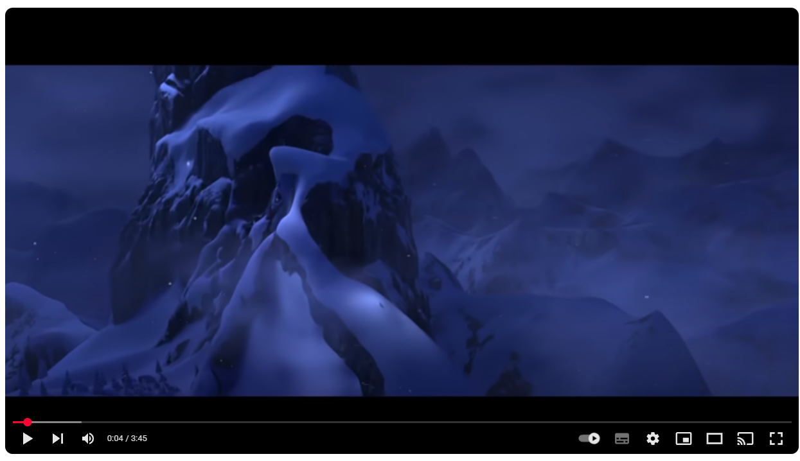

|  |
The snow glows white on the mountain tonight Not a footprint to be seen A kingdom of isolation and it looks like I’m the queen The wind is howling like this swirling storm inside Couldn’t keep it in, heaven knows I tried Don’t let them in, don’t let them see Be the good girl you always have to be Conceal, don’t feel, don’t let them know Well now they know Let it go, let it go Can’t hold it back anymore Let it go, let it go Turn away and slam the door I don’t care what they’re going to say Let the storm rage on The cold never bothered me anyway. It’s funny how some distance Makes everything seems small And the fears that once controlled me Can’t get to me at all It’s time to see what I can do To test the limits and break through No right, no wrong, no rules for me, I’m free Let it go, let it go I am one with the wind and sky Let it go, let it go, You’ll never see me cry Here I stand and Here I’ll stay Let the storm rage on… My power flurries through the air into the ground My soul is spiraling in frozen fractals all around And one thought crystallizes like an icy blast I’m never going back The past is in the past Let it go, let it go And I’ll rise like the break of dawn Let it go, let it go That perfect girl is gone Here I stand in the light of day Let the storm rage on The cold never bothered me anyway |